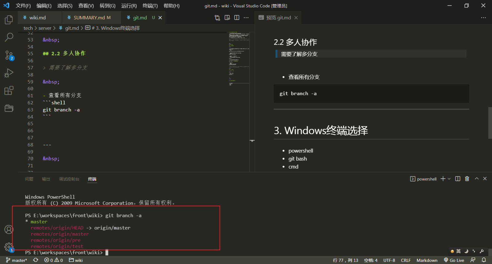
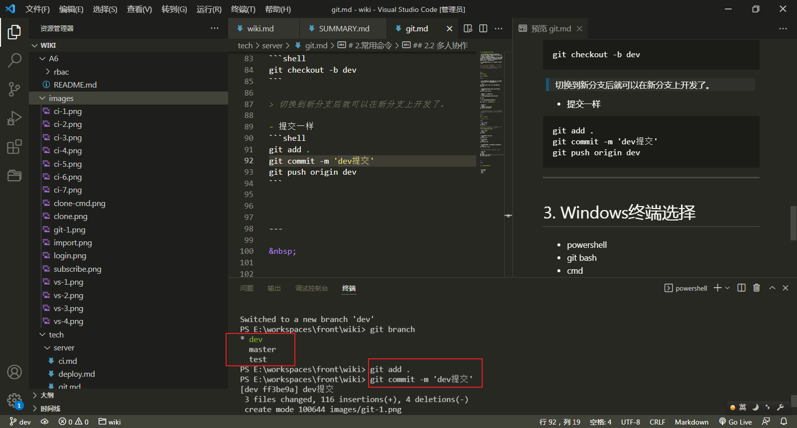
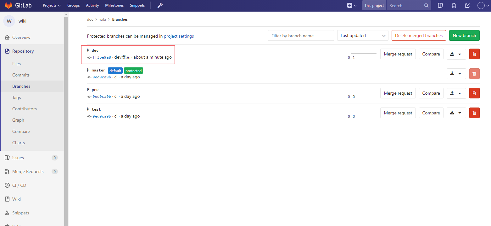
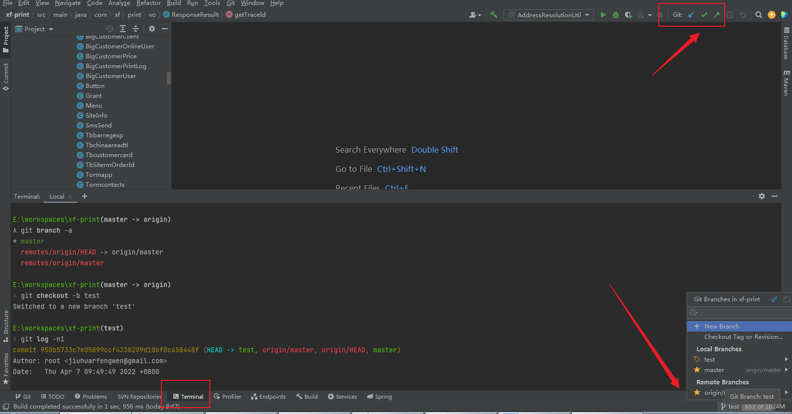

1.工作区、版本库、暂存区
- 工作区：就是你在电脑里能看到的目录。
- 版本库：工作区有一个隐藏目录.git，这个不算工作区，而是Git的版本库。
- 暂存区：Git的版本库里存了很多东西，其中最重要的就是称为stage（或者叫index）的暂存区，还有Git为我们自动创建的第一个分支master，以及指向master的一个指针叫HEAD。
我们把文件往Git版本库里添加的时候，是分两步执行的：
1.第一步是用git add把文件添加进去，实际上就是把文件修改添加到暂存区；
2.第二步是用git commit提交更改，实际上就是把暂存区的所有内容提交到当前分支。
2.常用命令
2.1 单人项目
- 从远程克隆项目（注意切换http方式，ssh需要配置密钥，目前我们未支持此种方式.）
git clone http://121.14.12.105:9898/doc/wiki.git
- 获取最新代码（默认拉取后是master分支）
git pull origin master
- 提交修改 (见上面的说明)
// 也就是将文件提交到暂存区(stash区)
git add .
// 将暂存区的提交到本地的版本库
git commit -m '本次提交的说明'
- 推送到远程
// 推送到远程master分支
git push origin master
以上就是单人项目常用的一些命令，从克隆项目->拉取分支代码->提交代码等全部都在master分支上操作。
2.2 多人协作
需要了解多分支
查看所有分支
git branch -a如下图，带remotes/的都是远程分支，其他为本地分支。*号标注的代表当前所在分支 
查看当前分支
git branch新建分支dev(命名随意)
git branch dev切换本地分支
git checkout dev新建分支并切换过去（上面两个命令的合并）
git checkout -b dev
切换到新分支后就可以在新分支上开发了。
- 提交一样
 git add . git commit -m 'dev提交' git push origin dev
此时，master就可以合并dev分支的代码到master了。因为dev是在master的基础上切出去的。所有可以将master视为干净分支。也就是基准分支。
// 切换到master
git checkout master
// 拉取最新代码
git pull origin master
// 获取远程dev代码
git fetch origin dev
// 切换到本地dev，会默认依赖fetch的远程dev创建本地的dev分支。
git checkout dev
// 如果之前本地已经有重名分支，可以在master分支上删除掉这条分支
git branch -D dev
// 在master上合并dev分支，之前的步骤就是保证本地有两条分支的最新代码。
git checkout master
git merge dev
// 提交合并
git add .
git commit -m '合并dev'
git push origin master
以上是没有远程分支，自己新建本地分支然后推送到远程的情况。然后再由master合并。
如果之前本地有重名分支，且远程分支已经被删，则也要删除本地对应的分支，重新fetch分支，拉取代码。如果远程分支并未被删除，则直接pull代码即可。
2.3 解决冲突
冲突产生的情景
比如某一时刻基于master最新代码。A、B两人在本地pull了最新的master代码。
A切出了分支 【feat_user_20220407】进行了用户模块的功能开发
B pull了最新的master代码，也切了个分支 【fix_user_20220407】进行线上的bug修复。
由于B开发较快，提交分支代码到远程后交由leader合并代码。
leader在master分支上合并了分支fix_user_20220407 并推送到远程然后部署了应用。
一天后A代码开发完毕，推送代码到远程feat_user_20220407并要求leader合并代码。此时leader拉取了master最新的代码尝试合并，但是发现A和B都改到了UserServiceImpl这个类。产生了代码冲突。此时有两种解决办法。
- 由leader询问A、B开发者，一起询问此次代码要如何合并。要哪些代码。
- 【常用】 leader放弃此次合并，由A在推送代码前先合并最新的master分支代码，并解决冲突。推送到远程。leader再合并feat分支即可(此次不会产生冲突，已经由A解决)
3. 工具
1. SourceTree
2. idea等自带git插件

3. 终端命令
如上图，idea自带的终端也可以直接执行git等命令，可以在setting里配置默认的终端选择。
也可以直接用powershell等终端。